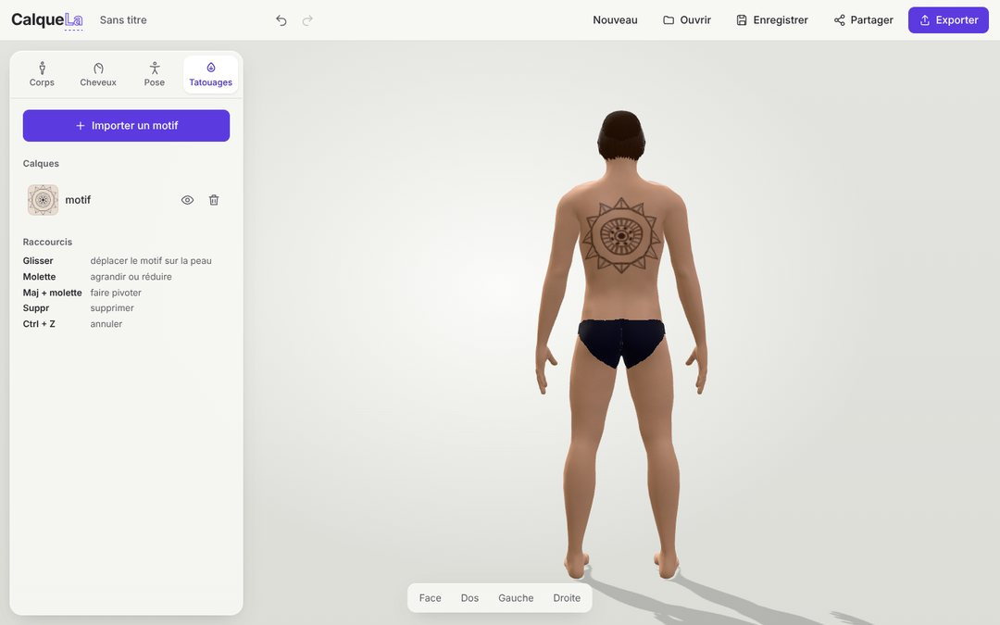
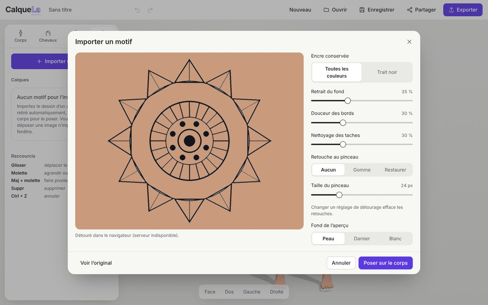

Des projets universitaires et personnels : un essayage de tatouages en 3D, une application sécurisée, un outil d'audit de sécurité, un logiciel de bureau, des sites web et un jeu multijoueur.
Une application web pour stocker et partager des notes et des fichiers entre utilisateurs, en lecture ou en écriture.
Les fonctionnalités restent simples : tout l'intérêt est dans la sécurité. J'ai repris l'OWASP Top 10
point par point pour que chaque risque soit traité dans le code et vérifié par un test automatisé.
64tests de sécurité
24menaces analysées (STRIDE)
AES-256chiffrement des données au repos
mots de passe hachés avec Argon2id
sessions révocables, cookie HttpOnly, Secure et SameSite=Strict
limitation des tentatives par IP et par compte contre la force brute
protection CSRF sur plusieurs couches
contrôle d'accès centralisé contre les failles IDOR
upload vérifié sur le contenu réel du fichier, avec liste blanche
CSP stricte, TLS 1.2 / 1.3 et en-têtes de sécurité
Un scanner de sécurité web non destructif : on lui donne l'adresse d'un site, il vérifie sa configuration et produit
un rapport JSON ou HTML, en français ou en anglais. Il ne fait que lire, il n'attaque rien.
en-têtes de sécurité, CSP, cookies et configuration TLS
fichiers sensibles exposés (.git, .env, sauvegardes), avec une calibration pour éviter les faux positifs
chaque problème relié à l'OWASP Top 10 et à un CWE, avec une recommandation
refuse de démarrer sans l'option --authorized, pour un usage légal uniquement
30 tests et intégration continue avec GitHub Actions
Un logiciel qui range automatiquement le dossier Téléchargements. Dès qu'un téléchargement est terminé, il propose
un nom propre et une destination, et rien n'est déplacé sans validation.
renommage normalisé : Rapport d'Été FINAL (1).PDF devient 2026-10-22_rapport_d_ete_final.pdf
tri par catégorie et règles personnalisées sur le nom
détection des doublons, sans jamais rien supprimer
historique avec annulation, icône en arrière-plan et notifications
logique séparée de l'interface et testée avec pytest, exportable en .exe
Un FPS de géants dans l'univers de Neon Genesis Evangelion, en duel local ou en mission solo contre les Anges.
Tokyo-3 est générée par programme et entièrement destructible.
Java 21 · Spring Boot · Three.js · Vite · JavaScript
Une application web pour essayer un tatouage avant de le faire. Elle crée un avatar 3D à sa
morphologie, puis on y pose le motif dessiné par un tatoueur : le fond de l'image est retiré automatiquement et le
tatouage suit le corps quand on change la pose ou la silhouette.

Le motif posé sur le dos de l'avatar

L'import : le fond du papier est retiré automatiquement
36morphologies combinées pour l'avatar
4096 pxtexture de peau où le tatouage est peint
8coupes de cheveux générées mèche par mèche
avatar homme ou femme : taille, corpulence, musculature, proportions, teint
poses des bras, jambes, tête et buste, avec des poses rapides
détourage du dessin : fond papier et éclairage inégal retirés, taches nettoyées
motif posé à plat ou enroulé autour d'un membre, avec calques, miroir et annuler / rétablir
backend Spring Boot : traitement des images et partage de projets par lien
détourage de secours en JavaScript si le serveur ne répond pas
sécurité : CSP stricte, limitation de débit, contrôle des images avant décodage
export PNG, dont une planche quatre vues pour le tatoueur
Jeu multijoueur jouable dans le navigateur. Chaque joueur doit garder sa souris dans un cercle qui rétrécit toutes
les 10 secondes, en esquivant des lasers puis des bombes. Les parties se jouent dans des salons de 5 joueurs maximum.
logique de jeu et collisions en JavaScript
système de salons à créer ou rejoindre
mise en ligne sans serveur dédié, sur GitHub Pages
Analyse d'une plateforme de bénévolat : rédaction du diagramme de cas d'utilisation en PlantUML et des
descriptions textuelles de chaque cas, puis vérification de leur cohérence.